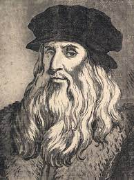
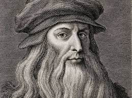
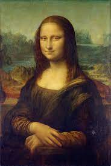
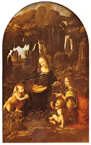
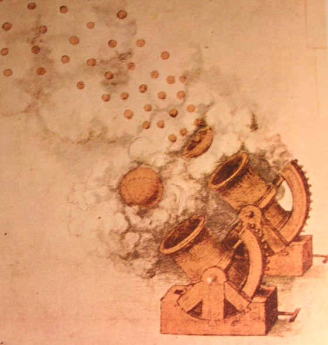
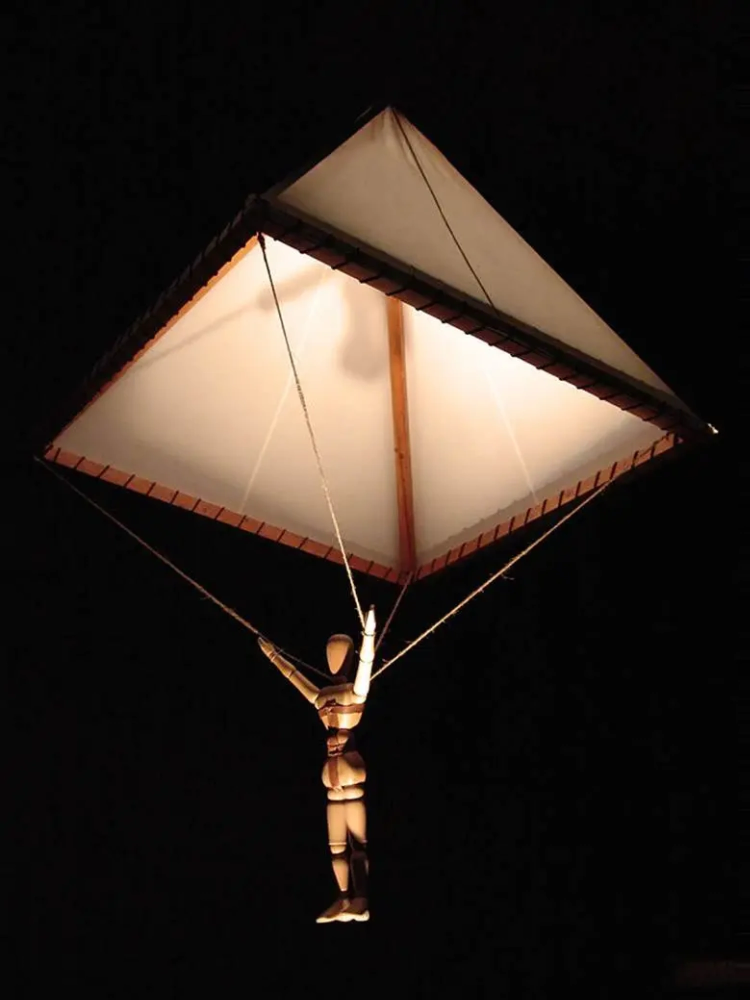
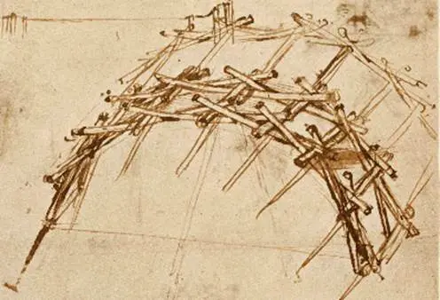
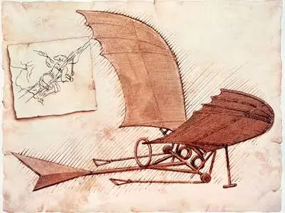

TSPedia
a test encyclopedia
Leonardo da Vinci
Leonardo di ser Piero da Vinci (15 April 1452 to 2 May 1519) was an Italian polymath of the High Renaissance was active as a painter, draughtsman, engineer, scientist, theorist, sculptor, and architect. While his fame initially rested on his achievements as a painter, he also became known for his notebooks, in which he made drawings and notes on a variety of subjects, including anatomy, astronomy, botany, cartography, painting, and paleontology. Leonardo is widely regarded to have been a genius who epitomized the Renaissance humanist ideal, and his collective works comprise a contribution to later generations of artists matched only by that of his younger contemporary by 23 years Michelangelo Buonarroti.
Born out of wedlock to a successful notary and a lower-class woman in, or near, Vinci, he was educated in Florence by the Italian painter and sculptor Andrea del Verrocchio. He began his career in the city, but then spent much time in the service of Ludovico Sforza in Milan. Later, he worked in Florence and Milan again, as well as briefly in Rome, all while attracting a large following of imitators and students. Upon the invitation of Francis I, he spent his last three years in France, where he died in 1519. Since his death, there has not been a time where his achievements, diverse interests, personal life, and empirical thinking have failed to incite interest and admiration, making him a frequent namesake and subject in culture.

Leonardo is identified as one of the greatest painters in the history of art and is often credited as the founder of the High Renaissance. Despite having many lost works and fewer than 25 attributed major works – including numerous unfinished works – he created some of the most influential paintings in Western art. His magnum opus, the Mona Lisa, is his best known work and often regarded as the world's most famous painting. The Last Supper is the most reproduced religious painting of all time and his Vitruvian Man drawing is also regarded as a cultural icon. In 2017, Salvator Mundi, attributed in whole or part to Leonardo, was sold at auction for US$450.3 million, setting a new record for the most expensive painting ever sold at public auction.
Revered for his technological ingenuity, he conceptualized flying machines, a type of armored fighting vehicle, concentrated solar power, a ratio machine that could be used in an adding machine, and the double hull. Relatively few of his designs were constructed or were even feasible during his lifetime, as the modern scientific approaches to metallurgy and engineering were only in their infancy during the Renaissance. Some of his smaller inventions, however, entered the world of manufacturing unheralded, such as an automated bobbin winder and a machine for testing the tensile strength of wire. He made substantial discoveries in anatomy, civil engineering, hydrodynamics, geology, optics, and tribology, but he did not publish his findings and they had little to no direct influence on subsequent science.
|  | |
|---|---|
| Born | Leonardo di ser Piero da Vinci 15 April 1452 (possibly Anchiano), Vinci, Republic of Florence |
| Died | 2 May 1519 (aged 67) Clos Lucé, Amboise, Kingdom of France |
| Education | Studio of Andrea del Verrocchio |
| Years active | 1470–1519 |
| Known For | Painting,drawing,engineering,anatomical studies,hydrology,botany,optics,geology |
| Notable work | Virgin of the Rocks (c. 1483–1493) Lady with an Ermine (c. 1489–1491) The Vitruvian Man (c. 1490) The Last Supper (c. 1495–1498) |
| Movement | High Renaissance |
| Family | Da Vinci Family |
Davinci Art Works
-
Monalisa :
The world’s most famous artwork, the Mona Lisa draws thousands of visitors to the Louvre  Museum each day, many of whom are compelled by the sitter’s mysterious gaze and enigmatic smile. The seemingly ordinary portrait of a young woman dressed modestly in a thin veil, somber colors, and no jewelry might also confound its viewers, who may wonder what all the fuss is about. The painting’s simplicity belies Leonardo’s talent for realism. The subject’s softly modeled face shows his skillful handling of sfumato, an artistic technique that uses subtle gradations of light and shadow, rather than line, to model form. The delicately painted veil, the finely wrought tresses, and the careful rendering of folded fabric reveal Leonardo’s tireless patience in recreating his studied observations. Moreover, the sitter’s perplexing expression only adds to her realism. Her smile might be engaging or it might be mocking—viewers can’t quite figure it out because, like a human, she is a complex figure, embodying contrary characteristics simultaneously.
-
Last Supper :
One of the most famous paintings in the world, the Last Supper was commissioned by Ludovico Sforza, duke of Milan and Leonardo’s patron during his first stay in that city, for the
 Dominican monastery of Santa Maria delle Grazie. Depicting a sequential narrative, Leonardo illustrates several closely connected moments in the Gospels, including Matthew 26:21–28, in which Jesus declares that one of the Apostles will betray him and then institutes the Eucharist. Leonardo, who was intrigued by the manner in which a man’s character can reveal itself in posture, expression, and gesture, depicted each disciple’s unique reaction to the declaration. The Apostles’ postures rise, fall, extend, and intertwine as they appear to whisper, yell, grieve, and debate around Jesus, who sits serenely in the center. Because of Leonardo’s experimental painting technique, in which he used tempera or oil paint on two layers of preparatory ground, the work began to disintegrate soon after he finished it. Viewers, however, can still recognize it as a complex study of varied human emotion, revealed in a deceptively simple composition.
Dominican monastery of Santa Maria delle Grazie. Depicting a sequential narrative, Leonardo illustrates several closely connected moments in the Gospels, including Matthew 26:21–28, in which Jesus declares that one of the Apostles will betray him and then institutes the Eucharist. Leonardo, who was intrigued by the manner in which a man’s character can reveal itself in posture, expression, and gesture, depicted each disciple’s unique reaction to the declaration. The Apostles’ postures rise, fall, extend, and intertwine as they appear to whisper, yell, grieve, and debate around Jesus, who sits serenely in the center. Because of Leonardo’s experimental painting technique, in which he used tempera or oil paint on two layers of preparatory ground, the work began to disintegrate soon after he finished it. Viewers, however, can still recognize it as a complex study of varied human emotion, revealed in a deceptively simple composition.
-
Self Portrait :
Long regarded as a self-portrait, the red chalk drawing of an old man with long wavy hair and a beard has been reproduced to such an extent that it defines how most people think of
Leonardo’s appearance. Yet some scholars argue that the figure, with its craggy features, furrowed brow, and downcast eyes, appears much older than the age Leonardo ever reached; Leonardo died at age 67. They propose that the drawing may be one of his grotesque drawings, sketches he habitually made in his notebooks of people with eccentric features. Whomever the portrait represents, it is a departure from Leonardo’s often captivating subjects, yet he managed to imbue the figure with the nobility and wisdom of a mature age.
and a beard has been reproduced to such an extent that it defines how most people think of
Leonardo’s appearance. Yet some scholars argue that the figure, with its craggy features, furrowed brow, and downcast eyes, appears much older than the age Leonardo ever reached; Leonardo died at age 67. They propose that the drawing may be one of his grotesque drawings, sketches he habitually made in his notebooks of people with eccentric features. Whomever the portrait represents, it is a departure from Leonardo’s often captivating subjects, yet he managed to imbue the figure with the nobility and wisdom of a mature age.
-
The Virgin of the Rocks :
Based on stylistic evidence, many scholars consider the painting The Virgin of the Rocks in the Louvre the first of two paintings that Leonardo made of an apocryphal legend in which the Holy Family meets Saint John the Baptist as they flee to Egypt from Herod’s Massacre of the Innocents. Leonardo was involved in years of litigation with the Confraternity of the  Immaculate Conception, which commissioned the work, and the dispute eventually led Leonardo to paint another version of the subject about 1508, which is now housed in the National Gallery of London. The first painting shows the ways in which Leonardo ushered in the High Renaissance. Early paintings from this period often depicted figures in linear arrangements, separate from one another, and stiff in form. In The Virgin of the Rocks, however, the figures of the Virgin Mary, the Christ Child, the infant John, and an archangel are arranged in a pyramidal composition, and they not only convincingly occupy a space but interact with one another through gestures and glances. A youthful Mary sits on the ground in a mysterious rocky landscape, not on a throne as so many early Renaissance paintings depicted her. Her body has movement—it seems to sway as she tilts her head protectively toward the infant John, who kneels in prayer at the left, and she looks as if she nudges him over to the Christ Child at the right. Jesus, in turn, blesses John as an archangel, seen in a complex pose from the back, points toward John and glances inscrutably outward at the viewer. Leonardo also notably excluded traditional holy signifiers—halos for Mary and Christ and a staff for John—so that the Holy Family appears less liine and more human.
-
Vitruvian-Man :
Leonardo’s pen-and-ink drawing Vitruvian Man comes from one of the many notebooks that he kept on hand during his mature years. It is accompanied by notes, written in mirror script, on the
 ideal human proportions that the Roman architect Vitruvius laid out in a book on architecture from the 1st century BCE. The drawing illustrates Vitruvius’s theory that the ideal human could fit within a circle and a square, two irreconcilable shapes. Leonardo resolved the concept by drawing a male figure in two superimposed positions—one with his arms outstretched to fit in a square and another with his legs and arms spread in a circle. The work shows not only Leonardo’s effort to understand significant texts but also his desire to expand on them. He was not the first to illustrate Vitruvius’s concepts, but his drawing later became the most iconic, partly because its combination of mathematics, philosophy, and art seemed a fitting symbol of the Renaissance. The drawing is now housed in the Gallerie dell’Accademia, Venice, where it is not typically on display but kept in a climate-controlled arch.
ideal human proportions that the Roman architect Vitruvius laid out in a book on architecture from the 1st century BCE. The drawing illustrates Vitruvius’s theory that the ideal human could fit within a circle and a square, two irreconcilable shapes. Leonardo resolved the concept by drawing a male figure in two superimposed positions—one with his arms outstretched to fit in a square and another with his legs and arms spread in a circle. The work shows not only Leonardo’s effort to understand significant texts but also his desire to expand on them. He was not the first to illustrate Vitruvius’s concepts, but his drawing later became the most iconic, partly because its combination of mathematics, philosophy, and art seemed a fitting symbol of the Renaissance. The drawing is now housed in the Gallerie dell’Accademia, Venice, where it is not typically on display but kept in a climate-controlled arch.
Inventions of Da Vinci
-
Helicopter (Aerial Screw) :
One of the more famous Leonardo da Vinci inventions, the design for the aerial screw, was made by him during the 1480s. At this time, he was employed by
 Ludovico Sforza, the Duke of Milan as a military engineer.
The aerial screw was one of the several aerial designs made by Leonardo da Vinci, including an ornithopter, early forms of a parachute, and hang gliders. These are considered to be some of his greatest inventions. The early renditions of Leonardo da Vinci’s flying machine were the part of the manuscript which dates back to 1487 and 1490.
This pen and ink sketch shows an outline of a flying machine with a similar functioning to modern helicopters. It is based on the design of a water screw, but instead of pushing against water, it does the same with air.
Ludovico Sforza, the Duke of Milan as a military engineer.
The aerial screw was one of the several aerial designs made by Leonardo da Vinci, including an ornithopter, early forms of a parachute, and hang gliders. These are considered to be some of his greatest inventions. The early renditions of Leonardo da Vinci’s flying machine were the part of the manuscript which dates back to 1487 and 1490.
This pen and ink sketch shows an outline of a flying machine with a similar functioning to modern helicopters. It is based on the design of a water screw, but instead of pushing against water, it does the same with air.
-
Barreled Cannon (Automatic Machine) :
 Leonardo was heavily preoccupied by the inadequacies of contemporary warfare, frustrated particularly by the time-lag between rounds of cannon fire, caused by the necessity to reload. Leonardo devised a multi-barreled cannon that could be rotated to fire a line of cannons whilst another was being reloaded: a primitive ancestor of the modern day machine gun.
-
Parachute :
This was one of Leonardo da Vinci’s best inventions which has even more relevance in today’s  time than then. The 15th century was the first time the world saw illustrative sketches of a conical parachute in Vinci’s manuscripts. His design mainly consisted of a linen cloth, sealed on all sides and held open by wooden poles, shaped like a pyramid. These poles were about seven meters long and were designed with the hope of allowing a man to jump from a great height without them plummeting to death or experiencing any kind of injury. The preliminary stages of the design were sketched in Da Vinci’s notebook in the year 1483.
-
Self Supporting Bridge :
Flying machines have been an integral part of most of Leonardo da Vinci’s science inventions, and this is no different. He made his first real flight studies during the 1480s, and there were over 200 Leonardo da Vinci inventions drawings that explained his inventions. The ornithopter flying machine was designed to be an aircraft that could fly just by flapping the wings, much like a bird. Along with that, it also had a sophisticated control system, but this design lost Vinci’s interest in its preliminary stages. He never built it. However, the design was enough to show Vinci’s imagination power and observation skills. In his notes, he mentioned birds, bats, and kites as his inspiration for the design, and it showed.
-
Ornithopter :
Flying machines have been an integral part of most of Leonardo da Vinci’s science inventions,  and this is no different. He made his first real flight studies during the 1480s, and there were over 200 Leonardo da Vinci inventions drawings that explained his inventions. The ornithopter flying machine was designed to be an aircraft that could fly just by flapping the wings, much like a bird. Along with that, it also had a sophisticated control system, but this design lost Vinci’s interest in its preliminary stages. He never built it. However, the design was enough to show Vinci’s imagination power and observation skills. In his notes, he mentioned birds, bats, and kites as his inspiration for the design, and it showed.